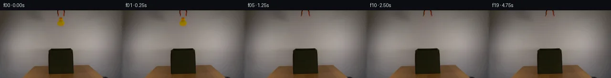
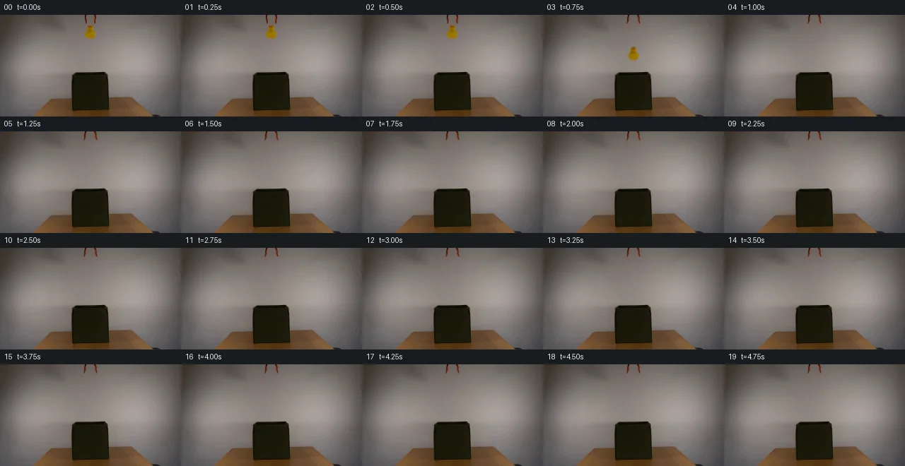
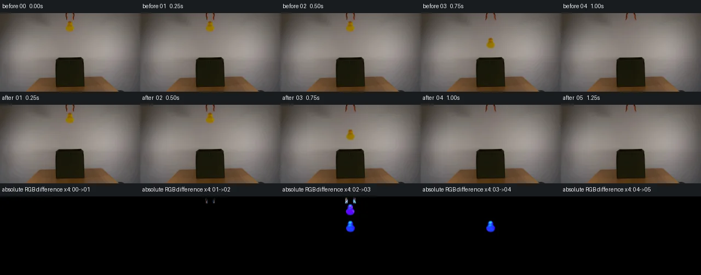

V0 · 初版 · 最终提交
![]()
Observable Generation Trace
把最终像素视频、Harness 冻结的每轮候选、真实工具事件和 Agent 自述放在同一页。可观测证据与模型自述分开标记，避免把“模型说它检查过”误当成真实工具调用。
![首帧]()
Static locked-off single-shot with fixed frame throughout filmed with constant framerate in real-time. The scene shows a realistic scientific demonstration. The scene only contains the described setup and actions. An orange-black grabber tool is suspended above the open dark green fabric box on a wooden table. The orange-black grabber tool releases the yellow rubber duck above the open dark green fabric box.
首帧显示在左侧播放器初始画面。Track 权限、隔离和 tensor 一致性来自 run manifest，而不是 METHOD.md。
默认勾选初版和最终版；可选其他版本一起同步播放。仅检查图更新的连续重复快照已合并，回退旧视频仍保留为一次修订。
Observable events
来源：events.jsonl + run manifest
此 Track 禁止读取输出图片。逐轮预览由外部 Harness 自动冻结，只用于事后审计，生成 Agent 当时看不到这些页面。
Frozen candidates
每张图来自该 round 的真实 00 / 01 / 05 / 10 / 19 帧

pixels 7ea4ac81a097fd57 · code bc214acaa73d0238
--- previous/generate.py
+++ current/generate.py
@@ -0,0 +1,238 @@
+"""Source-pixel compositing and a real-time analytic fall; no image viewer used."""
+from pathlib import Path
+import json
+import math
+
+import numpy as np
+from PIL import Image, ImageDraw
+from scipy.ndimage import map_coordinates, gaussian_filter1d
+
+from artifact_io import save
+
+
+ROOT = Path(__file__).resolve().parent
+W, H, COUNT, FPS = 256, 144, 20, 4
+SOURCE = np.asarray(Image.open(ROOT / "first_frame.png").convert("RGB"))
+assert SOURCE.shape == (H, W, 3)
+SRC = SOURCE.astype(np.float64)
+Y, X = np.mgrid[:H, :W].astype(np.float64)
+RELEASE = 0.59
+GRAVITY = 2400.0
+DUCK_CENTRE = (127.5, 25.0)
+FLOOR_CENTRE_Y = 111.0
+CONTACT_TIME = math.sqrt(2 * (FLOOR_CENTRE_Y - DUCK_CENTRE[1]) / GRAVITY)
+
+
+def background_estimate(x0, x1, y0, y1, left, right):
+ """Interpolate the measured nearby background along each source row."""
+ result = SRC.copy()
+ l = SRC[y0:y1, left[0]:left[1]].mean(axis=1)
+ r = SRC[y0:y1, right[0]:right[1]].mean(axis=1)
+ l = gaussian_filter1d(l, 0.6, axis=0, mode="nearest")
+ r = gaussian_filter1d(r, 0.6, axis=0, mode="nearest")
+ lx = (left[0] + left[1] - 1) / 2
+ rx = (right[0] + right[1] - 1) / 2
+ f = ((np.arange(x0, x1) - lx) / (rx - lx))[None, :, None]
+ result[y0:y1, x0:x1] = l[:, None, :] * (1 - f) + r[:, None, :] * f
+ return result
+
+
+def extract_layer(bg, bounds, kind):
+ """Estimate coverage from the blue deficit, retaining measured RGB texture.
+
+ Both yellow rubber and black/orange jaws have very little blue, whereas
+ their backdrop has B around 95--119. Antialiased edge pixels contain a
+ mixture of those two colors. All foreground estimates are local.
+ """
+ x0, x1, y0, y1 = bounds
+ domain = (X >= x0) & (X < x1) & (Y >= y0) & (Y < y1)
+ blue_deficit = bg[:, :, 2] - SRC[:, :, 2]
+ if kind == "duck":
+ chroma = SRC[:, :, 1] - SRC[:, :, 2]
+ valid = domain & (blue_deficit > 3.2) & (chroma > 8.0)
+ blue_foreground = 3.0
+ else:
+ valid = domain & (blue_deficit > 4.0)
+ blue_foreground = 8.0
+ alpha = np.zeros((H, W), dtype=np.float64)
+ alpha[valid] = np.clip(
+ blue_deficit[valid] / (bg[:, :, 2][valid] - blue_foreground), 0, 1
+ )
+ # Dense yellow/black pixels are opaque; retain the complete source colors.
+ alpha[valid & (SRC[:, :, 2] < 16)] = 1.0
+ premul = SRC - (1 - alpha[:, :, None]) * bg
+ premul = np.clip(premul, 0, 255 * alpha[:, :, None])
+ premul[alpha == 0] = 0
+ repair = SRC.copy()
+ repair[alpha > 0] = bg[alpha > 0]
+ return {"alpha": alpha, "premul": premul, "repair": repair}
+
+
+duck_bg = background_estimate(118, 140, 14, 35, (115, 119), (138, 142))
+duck = extract_layer(duck_bg, (118, 140, 14, 35), "duck")
+left_bg = background_estimate(119, 125, 0, 14, (116, 119), (125, 129))
+right_bg = background_estimate(131, 138, 0, 14, (127, 131), (138, 142))
+left = extract_layer(left_bg, (119, 125, 0, 14), "jaw")
+right = extract_layer(right_bg, (131, 138, 0, 14), "jaw")
+
+
+def remove_layer(canvas, layer):
+ support = layer["alpha"] > 0
+ canvas[support] = layer["repair"][support]
+
+
+def sample_layer(layer, sx, sy):
+ coordinates = np.array([sy, sx])
+ a = map_coordinates(layer["alpha"], coordinates, order=1, mode="constant", cval=0)
+ rgb = np.stack([
… diff truncated; 151 more lines …pixels 7ea4ac81a097fd57 · code 5fb521ee87b84524
--- previous/generate.py
+++ current/generate.py
@@ -1,7 +1,9 @@
"""Source-pixel compositing and a real-time analytic fall; no image viewer used."""
from pathlib import Path
+import base64
import json
import math
+import shutil
import numpy as np
from PIL import Image, ImageDraw
@@ -181,6 +183,7 @@
assert tensor.shape == (H, W, COUNT)
assert tensor.dtype == np.uint32
assert np.array_equal(frames[0], SOURCE)
+ assert (ROOT / "frames" / "00.png").read_bytes() == (ROOT / "first_frame.png").read_bytes()
png_checks = []
for i in range(COUNT):
with Image.open(ROOT / "frames" / f"{i:02d}.png") as im:
@@ -189,6 +192,22 @@
packed = (rgb[:, :, 0] << 16) | (rgb[:, :, 1] << 8) | rgb[:, :, 2]
assert np.array_equal(packed, tensor[:, :, i])
png_checks.append(True)
+ html = (ROOT / "index.html").read_text()
+ data, _ = json.JSONDecoder().raw_decode(html.split("const DATA=", 1)[1])
+ unpack = lambda encoded: np.frombuffer(base64.b64decode(encoded), dtype="<u4")
+ decoded = unpack(data["first"]).copy()
+ assert np.array_equal(decoded, tensor[:, :, 0].ravel())
+ assert len(data["deltas"]) == 19
+ for i, encoded in enumerate(data["deltas"], 1):
+ packet = unpack(encoded)
+ pos = 0
+ while pos < len(packet):
+ start, length = map(int, packet[pos:pos+2])
+ decoded[start:start+length] = packet[pos+2:pos+2+length]
+ pos += length + 2
+ assert pos == len(packet)
+ assert np.array_equal(decoded, tensor[:, :, i].ravel())
+ assert "setInterval" in html and "},250)" in html
static = np.ones((H, W), dtype=bool)
static[:85, 115:142] = False
assert all(np.array_equal(f[static], SOURCE[static]) for f in frames)
@@ -211,7 +230,8 @@
report = {
"frame_count": COUNT, "fps": FPS, "duration_seconds": COUNT / FPS,
"tensor_shape": list(tensor.shape), "tensor_dtype": str(tensor.dtype),
- "frame_00_exact": True, "png_tensor_checks": png_checks,
+ "frame_00_exact": True, "frame_00_file_bytes_exact": True,
+ "png_tensor_checks": png_checks, "player_all_20_frames_exact": True,
"static_region_exact": True, "front_wall_and_table_exact": True,
"frames_04_to_19_identical": True, "changed_pixels_per_transition": changes,
"yellow_component_by_frame": yellow_centres,
@@ -229,6 +249,7 @@
frames = np.stack([render(i / FPS) for i in range(COUNT)])
frames[0] = SOURCE
save(frames, ROOT)
+ shutil.copyfile(ROOT / "first_frame.png", ROOT / "frames" / "00.png")
inspection_sheet(frames)
transition_sheet(frames)
verify(frames)Final visual checks
Harness 保存的最终产物


Agent claims
以下文字由生成 Agent 撰写，不等同于工具证据
The input was inspected using Pillow/NumPy RGB values, component counts, scanlines, and textual pixel classifications. No image viewing tool was used. Coordinates below refer to the 256 × 144 source, with the origin at the upper left.
The camera is fixed. A softly illuminated gray/taupe background fills the upper area. The wooden tabletop is visible near y=116–143, particularly under and beside the box. All of these source pixels should remain stationary.
Two narrow orange and black grabber jaws enter through the top of the frame. Their measured footprints are approximately x=119–124 and x=131–136, y=0–13. The yellow duck is centered near (127.5, 25), with its antialiased silhouette approximately x=119–136, y=14–35. Its saturated yellow component is x=120–134, y=16–33; the orange beak is near x=126–129, y=16–18. Keep the source duck texture and shape.
The very dark olive/green fabric box occupies approximately x=102–154, y=81–135. The narrow opening/back rim is around y=81–84; the textured front wall starts near y=85 and extends down to y=133. Typical front-wall RGB is (24,24,10), so the prompted green is nearly black in this lighting. The box appears from a low frontal angle: the duck will enter the opening and be hidden by the tall opaque front wall. Preserve this geometry and the tabletop contact shadow.
Use a source-derived duck layer and two source-derived jaw layers over a locally interpolated background repair. Open the jaws by gently splaying their lower ends while keeping the upper frame intersections fixed. Release at t=0.59 s. Use downward acceleration of 2400 image pixels/s² (approximately 245 pixels/m under earth gravity), with only slight lateral drift and a small tilt. The roughly 50-pixel drop to the opening then lasts about 0.21 s, consistent with real time. At 4 fps this is sampled by one clearly airborne frame; it must not be stretched over seconds. Mask the duck behind the existing front lip as it passes y≈84. Any subsequent contact and short rubber rebound occur inside the opaque box and are not visible.
Times are frame sampling times; each frame displays for 0.25 s, giving a 5-second sequence.
| Frame | Time (s) | Event |
|---|---|---|
| 00 | 0.00 | Exact original RGB frame; jaws and duck held. |
| 01 | 0.25 | Hold setup steady. |
| 02 | 0.50 | Jaws begin splaying slightly; duck still held. |
| 03 | 0.75 | Jaws open; duck in accelerated free fall, center near y=56. |
| 04 | 1.00 | Duck has entered the box and is fully hidden behind its front wall. |
| 05 | 1.25 | Hidden duck completes its short damped contact response; tool stays open. |
| 06 | 1.50 | Open grabber remains suspended; box stationary. |
| 07 | 1.75 | Settled setup. |
| 08 | 2.00 | Settled setup. |
| 09 | 2.25 | Settled setup. |
| 10 | 2.50 | Settled setup. |
| 11 | 2.75 | Settled setup. |
| 12 | 3.00 | Settled setup. |
| 13 | 3.25 | Settled setup. |
| 14 | 3.50 | Settled setup. |
| 15 | 3.75 | Settled setup. |
| 16 | 4.00 | Settled setup. |
| 17 | 4.25 | Settled setup. |
| 18 | 4.50 | Settled setup. |
| 19 | 4.75 | Final steady setup; duck remains inside the box. |
The short fall is intentionally resolved at the required 4 fps without motion trails, extra objects, camera motion, or visible motion of the fabric box. Numeric checks will cover exact first-frame identity, source preservation outside the moving footprints, layer bounds, all output dimensions, and every PNG's agreement with the packed tensor.
The sequence uses only the supplied first_frame.png and prompt.txt as scene inputs. The original scene was measured with local Pillow/NumPy RGB inspection, connected-component statistics, sampled scanlines, and textual color classifications. No image Read/View tool, external reference, network resource, AI model, external rendering engine, or subagent was used. The generated inspection images are supplied as artifacts; I did not visually review them with an image tool.
OBSERVATION.md was written before generate.py and records the measured setup and all 20 planned frames.
The original frame supplies the background, fabric box, tabletop, duck surface texture, and orange/black grabber surfaces. Local horizontal interpolation between measured neighboring background strips repairs the small areas vacated by the moving duck and jaws. Coverage is estimated from the blue-channel deficit between the foreground and its gray backdrop, with local chroma thresholds and opaque cores. These are internally computed pixel layers, not imported masks. Premultiplied RGB compositing preserves the source texture and antialiased outlines.
The two jaws open over 0.42–0.72 seconds. Their lower ends splay by three pixels in opposite directions; their intersections with the top frame boundary stay fixed. At 0.50 seconds the duck is still held while the jaws begin opening. Release occurs at 0.59 seconds.
The duck follows an analytic gravitational fall with downward acceleration 2400 pixels/s², equivalent to approximately 245 pixels per meter at earth gravity. It drifts less than one pixel sideways and tilts by at most 2.5 degrees. Three local exposure samples spanning 0.003 seconds give a small amount of motion blur. No new duck geometry or surface is synthesized.
The front wall is opaque from y=85 downward, with an antialiased occlusion boundary around y=84.25. The duck's center reaches approximately y=56 at the 0.75-second sample. It then passes into the narrow opening and disappears behind the original front wall. A short damped rebound is included in the hidden analytic trajectory after contact at about 0.858 seconds. It remains fully occluded and does not generate a visible effect. The box and table remain stationary. Frames 04–19 show the settled scene with the grabber open.
generate.py: deterministic local generator. Run python generate.py from this workspace to rebuild and verify the outputs.pixels.npz: key pixels, shape (144,256,20), dtype uint32, packed as 0xRRGGBB.frames/00.png through frames/19.png: 20 RGB images, each 256 × 144. Frame 00 is a byte-for-byte copy of the original PNG.inspection.png: all 20 frames, labeled by sample time.transition_check.png: before/after frames and amplified absolute RGB differences across the first five transitions.index.html: self-contained player generated with the supplied output helper/template; 250 ms per frame, play/pause, seeking, replay, and looping. No external assets are required..tmp/verification.json: numeric verification results.The 20 frames display at 4 fps for exactly five seconds; sample times are 0.00 through 4.75 seconds. At this sampling rate the short physical fall has one clearly airborne sample. Its duration is not slowed to fill the clip.
The generator checks exact original RGB equality and original file-byte equality for frame 00. It decodes every output PNG and compares all its packed pixels with the corresponding uint32 tensor plane. It also independently reconstructs every frame from the HTML player's base64 first frame and delta packets, checking agreement with the tensor.
All pixels outside the narrow moving region are exactly preserved. The entire original image at y≥85, including the box's front wall and tabletop, is identical in every frame. Numeric yellow-component tracking confirms a held duck in frames 00–02, an airborne duck in frame 03, and no visible duck after entry in frames 04–19. The final 16 frames are identical. These are numeric and structural checks, not a claim of visual review.